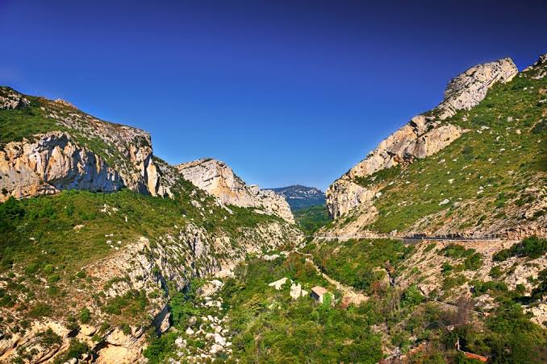

Massif des
Corbières


⟹ Sites Naturels & Panoramas ⟸
Les Corbières sont un territoire de transition, à la fois géographique, géologique et historique. Elles occupent principalement le sud et l'est de l'Aude et se prolongent vers les Pyrénées-Orientales, entre la vallée de l'Aude, le littoral méditerranéen, le Fenouillèdes et les premiers reliefs pyrénéens. Loin de former une montagne uniforme, le massif est un véritable puzzle de plateaux, chaînons calcaires, schistes, marnes, gorges et vallées, dont la diversité a profondément conditionné l'implantation humaine, les voies de passage, l'agriculture et les systèmes de défense.
Une histoire géologique de plusieurs centaines de millions d'années. Le paysage actuel ne s'explique pas par un seul épisode. Des terrains très anciens, hérités de l'ère primaire et de l'orogenèse hercynienne, affleurent notamment dans le secteur de Mouthoumet. Ils ont ensuite été recouverts ou bordés par d'importantes séries sédimentaires déposées lorsque la mer occupait une partie de la région : calcaires, marnes et autres roches du Mésozoïque conservent ainsi la mémoire d'anciens environnements marins. À partir de la fin du Mésozoïque et surtout au Cénozoïque, le rapprochement puis la collision de la plaque ibérique avec la plaque européenne entraînent la formation des Pyrénées et bouleversent les terrains des Corbières.
Plis, failles, chevauchements et déplacements de couches donnent alors au massif son relief extrêmement compartimenté. L'érosion poursuit ensuite le travail en creusant vallées et défilés et en mettant à nu des structures spectaculaires. Cette histoire explique la présence de sites géologiques remarquables, de fossiles et de paysages où des terrains d'âges très différents se côtoient sur de faibles distances. Les Corbières constituent aujourd'hui l'un des secteurs privilégiés pour comprendre la formation de la chaîne pyrénéenne.

Une occupation humaine très ancienne. Grottes, abris, oppida et vestiges archéologiques témoignent d'une fréquentation du territoire bien antérieure au Moyen Âge. La proximité de la Méditerranée et de grands axes antiques reliant Narbonne à l'intérieur des terres place les Corbières au contact des mondes ibérique, gaulois puis romain. À l'époque romaine, la région appartient à la Gaule narbonnaise ; les plaines et vallées sont mises en valeur tandis que les passages naturels permettent de relier le littoral, le Roussillon et les hautes terres.
Après l'Antiquité, le territoire se trouve à la charnière de plusieurs pouvoirs. Les périodes wisigothique puis carolingienne laissent place à une organisation féodale complexe faite de vicomtés, seigneuries, abbayes et châteaux. Les Corbières deviennent un pays de marches et de frontières, où contrôler une crête, une vallée ou un défilé revêt une importance stratégique majeure. Des lignages locaux et les vicomtes Trencavel y exercent une influence considérable, tandis que les établissements religieux structurent aussi le peuplement et l'exploitation des terres.
Le catharisme et la croisade contre les Albigeois ont durablement marqué la mémoire des Corbières. Aux XIIe et XIIIe siècles, la dissidence chrétienne que l'on nomme aujourd'hui catharisme bénéficie de soutiens dans une partie de la noblesse méridionale. À partir de 1209, la croisade déclenchée contre les Albigeois bouleverse l'équilibre politique du Languedoc. Les campagnes militaires, confiscations et changements de fidélité renforcent progressivement l'emprise de la monarchie capétienne sur cette région jusque-là très autonome.
Les châteaux de Peyrepertuse, Quéribus, Aguilar, Termes et Puilaurens, souvent associés aujourd'hui à l'expression « citadelles du vertige », racontent plusieurs phases de cette histoire. Beaucoup sont d'abord des forteresses féodales liées aux seigneuries méridionales ; après la croisade et l'affirmation du pouvoir royal, ils sont remaniés et intégrés à un dispositif défensif tourné vers le sud. Le traité de Corbeil de 1258, conclu entre Louis IX et Jacques Ier d'Aragon, clarifie la frontière franco-aragonaise : les Corbières deviennent alors un espace militaire essentiel du royaume de France face aux possessions de la couronne d'Aragon.
Cette fonction frontalière se maintient pendant plusieurs siècles. Les forteresses royales surveillent les passages entre Languedoc et Roussillon jusqu'au traité des Pyrénées de 1659, par lequel le Roussillon est rattaché à la France. La frontière politique se déplace alors vers la chaîne pyrénéenne et les grandes citadelles des Corbières perdent progressivement leur rôle stratégique. Certaines sont abandonnées, d'autres servent encore ponctuellement de garnisons avant de devenir des monuments historiques et des emblèmes paysagers.
Le patrimoine monastique est tout aussi ancien. L'abbaye de Lagrasse, dont les origines remontent au haut Moyen Âge, devient un puissant établissement bénédictin et participe à l'organisation économique et spirituelle de la vallée de l'Orbieu. L'abbaye de Fontfroide est fondée en 1093 avant de rejoindre l'ordre cistercien au XIIe siècle. Elle constitue un vaste domaine agricole et pastoral et joue un rôle important dans l'histoire religieuse régionale. Ces abbayes, avec les prieurés, églises rurales et anciens chemins, rappellent que les Corbières médiévales ne furent pas seulement un pays de forteresses.
Pendant des siècles, l'économie repose sur une combinaison adaptée à des sols souvent pauvres et à un climat sec : élevage ovin, cultures céréalières, olivier, exploitation forestière et vigne. Le pastoralisme entretient les espaces ouverts et la garrigue. La viticulture, ancienne, prend une place croissante à l'époque moderne puis surtout au XIXe siècle avec l'essor du vignoble languedocien. Comme le reste du Midi, les Corbières sont frappées par la crise du phylloxéra puis par les crises de surproduction qui culminent avec la grande révolte viticole de 1907.
Le XXe siècle est marqué par l'exode rural, la mécanisation agricole, la transformation du vignoble et l'abandon de certaines terres difficiles. En parallèle, l'image des Corbières évolue : longtemps perçues comme un arrière-pays pauvre et rude, elles sont progressivement reconnues pour leurs paysages, leurs vins, leur patrimoine médiéval et leur biodiversité. Les appellations viticoles, la valorisation du « Pays Cathare », la restauration des forteresses et le développement de la randonnée participent à cette nouvelle identité.
Depuis 2021, une grande partie des Corbières méridionales et du Fenouillèdes appartient au Parc naturel régional Corbières-Fenouillèdes. Le Parc protège et met en valeur un territoire exceptionnel par sa géologie, ses milieux méditerranéens, ses rapaces, ses villages, son patrimoine pastoral et viticole ainsi que ses monuments. Il développe notamment une lecture géologique du territoire à travers plusieurs géosites, rappelant que l'histoire des Corbières s'écrit sur deux échelles indissociables : celle, immense, de la formation des Pyrénées et celle, plus récente, des sociétés humaines qui ont façonné ces montagnes.
Narbonne : porte d'entrée du massif côté est, à quelques kilomètres de l'abbaye de Fontfroide.
Pic de Bugarach : point culminant du massif, sommet le plus emblématique des Corbières.
Rennes-le-Château : village mystérieux voisin de l'histoire de l'abbé Saunière.
Littoral audois : Gruissan et Leucate, stations balnéaires familiales situées en arrière-plan du massif.